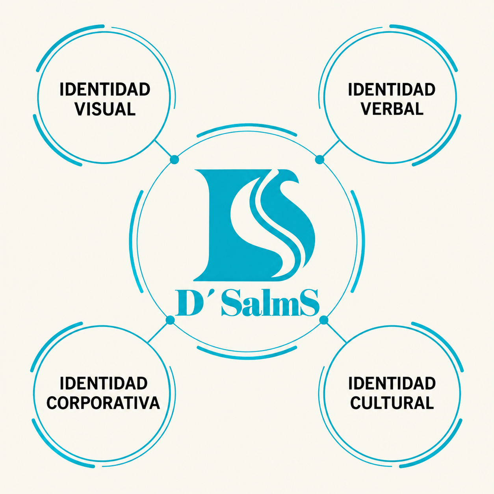

Identidad
Lo que la marca es y construye: nombre, valores, misión y cultura.
03 · ¿Qué identidad tenemos?
Lo que la marca es y construye: nombre, valores, misión y cultura.
Cómo se desea que el público perciba y recuerde a D'Salms.
Imagotipo, colores, tipografías, prendas, packaging y redes.
Tono, vocabulario, frases y estilo de respuesta.
El carácter de la marca, con rasgos humanos asociados.

Imagotipo D+S, colores, tipografías, prendas, etiquetas, packaging y redes.
Tono de voz, vocabulario, frases y forma de responder al cliente: cercano, juvenil, inspirador y auténtico.
Misión, visión, valores, filosofía y comportamiento esperado de la marca.
Fe, moda, identidad, creatividad, valores positivos y comunidad influyen en cada punto de contacto: diseño, comunicación, productos, atención y contenido.
La fe es el origen de los mensajes, pero D'Salms se expresa con lenguaje de moda: sin recargar la estética con elementos religiosos tradicionales.
5 frases cercanas y fáciles de entender: así queremos ser percibidos.